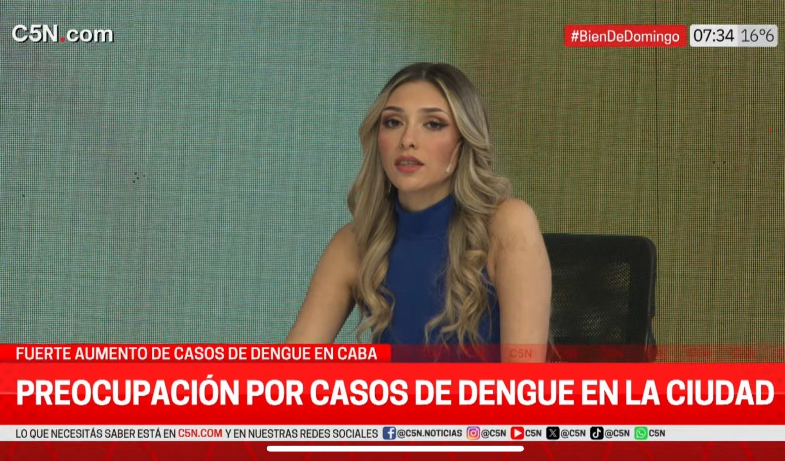
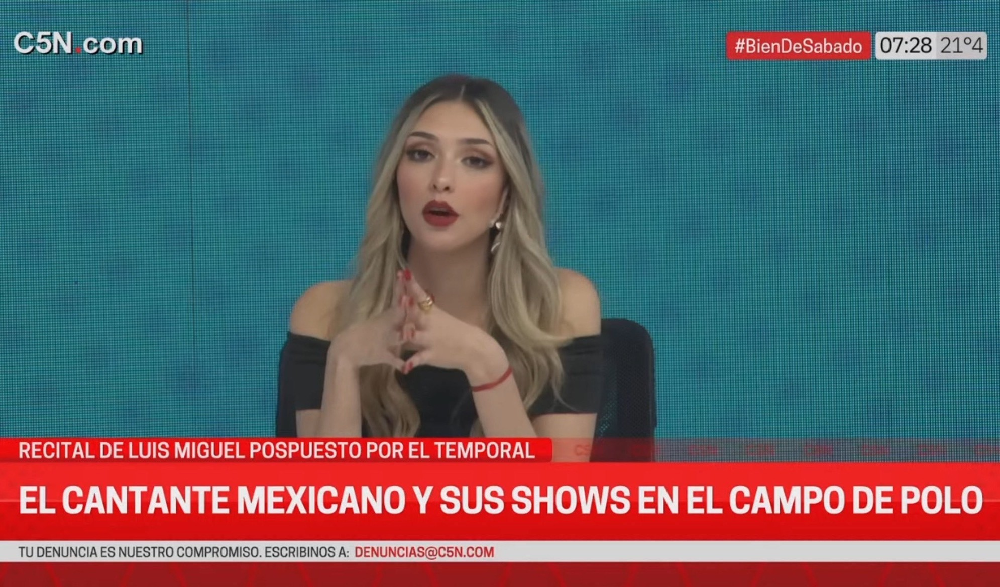

Journalist & Panelist – C5N
Television Network Experience
Experience
Selected for a competitive internship at one of Argentina's leading television networks. Participated in segments on meteorology, environmental news, and health topics including public health emergencies.
Key Learnings
I improved my public speaking skills for live on-camera broadcasting, learned to work under pressure and solve problems quickly in response to breaking news.
And of course, I learned a lot about weather and meteorology… now all my friends ask me how the weather's going to be.